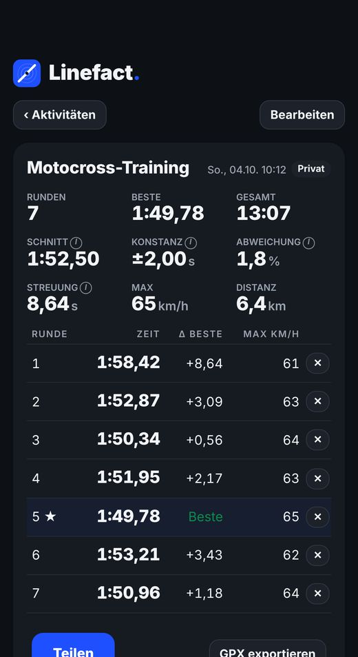
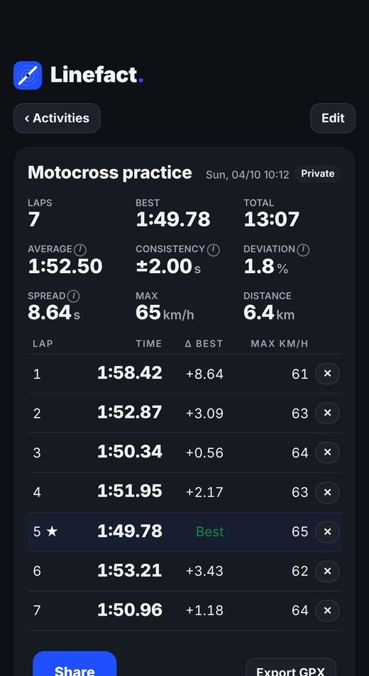
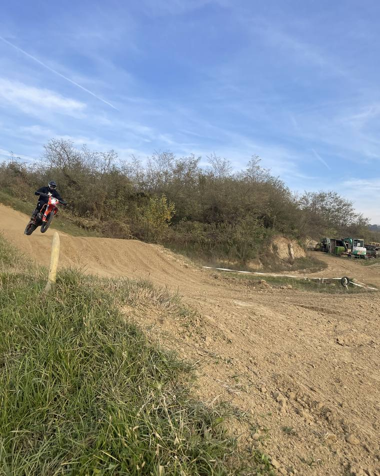
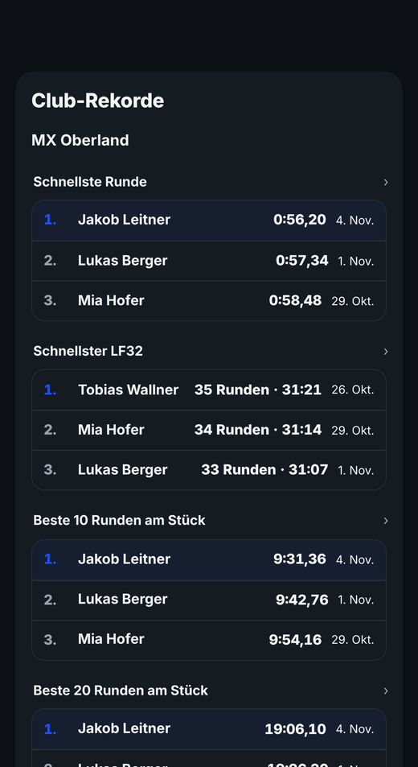
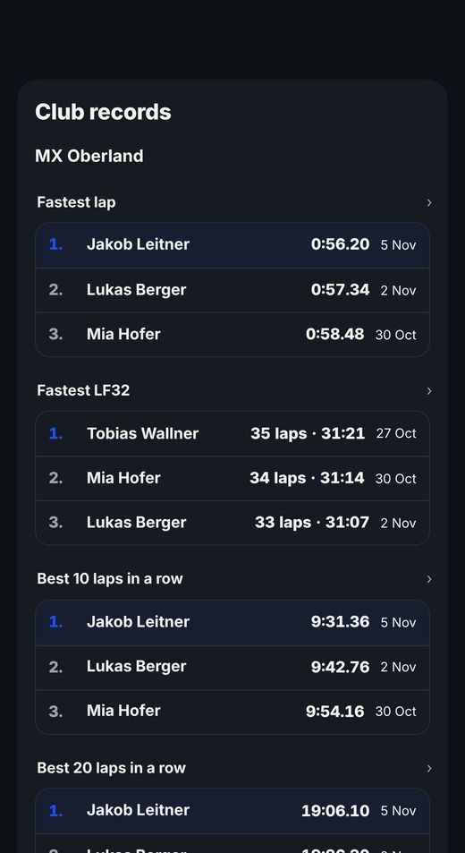
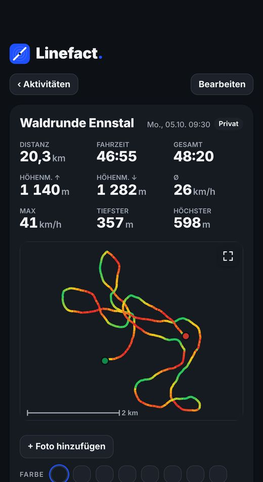
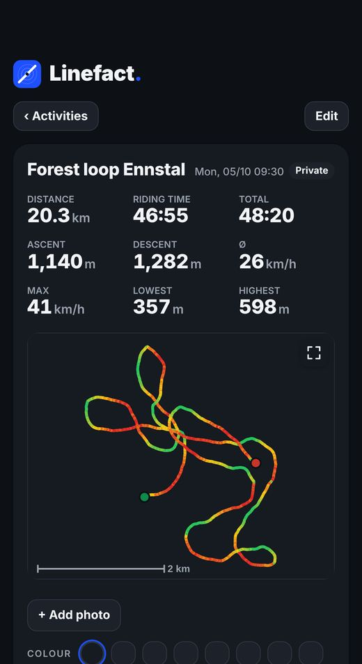

Einfach fahren.
Sehen, was deine Crew fährt.
Just ride.
See what your crew rides.
GPS-Rundenzeiten für Motocross, Enduro-Touren, Clubs und Rennen – mit den Leuten, mit denen du fährst.
GPS lap times for motocross, enduro rides, clubs and races – with the people you ride with.


Kostenlos · ohne Abo · für iPhone, Apple Watch und Garmin
Free · no subscription · for iPhone, Apple Watch and Garmin


Jede Runde gestoppt.
Every lap timed.
Losfahren – Linefact erkennt die Ziellinie und stoppt jede Runde automatisch per GPS.
Just ride – Linefact detects the finish line and times every lap automatically via GPS.
- Großes Dashboard mit laufender, letzter und bester RundeBig dashboard with running, last and best lap
- Race-Modus: LF32, 5, 10 oder 20 RundenRace mode: LF32, 5, 10 or 20 laps
- Gegen den Geist fahren und Video-OverlayRace your ghost and video overlay


Sehen, was deine Crew fährt.
See what your crew rides.
Folge deinen Leuten, tritt deinem Club bei und vergleicht euch auf euren Strecken.
Follow your people, join your club and compare on your tracks.
- Feed mit Fahrten, Likes und KommentarenFeed with rides, likes and comments
- Club-Rekorde, Club-Rennen und ChallengesClub records, club races and challenges
- Punkte und Levels vom Rookie bis zur LegendPoints and levels from Rookie to Legend



Jede Tour auf der Karte – auch ohne Netz.
Every ride on the map – even without signal.
Touren mit Kilometern und Höhenmetern aufzeichnen – mit Offline-Karten auch im Funkloch.
Record rides with distance and elevation – with offline maps even in dead zones.
- Offline-Karten und eigene Karte mit HöhenlinienOffline maps and our own map with contour lines
- Enduro Race mit CheckpointsEnduro Race with checkpoints
- Start und Ziel beim Teilen immer ausgeblendetStart and finish always hidden when sharing


Gemacht an der Strecke, nicht im Büro.
Made at the track, not in an office.
Linefact entsteht in Österreich – von einem Fahrer, der selbst Motocross und Enduro fährt. Kein Konzern, keine Werbe-Tracker, kein Abo: nur das, was du draußen wirklich brauchst. Und wenn dir etwas fehlt, schreib uns – viele Funktionen kommen direkt von Fahrern.
Linefact is made in Austria – by a rider who rides motocross and enduro himself. No corporation, no ad trackers, no subscription: just what you really need out there. And if something's missing, write to us – many features come straight from riders.
support@linefact.atKurz gefragt
Quick answers
Was kostet Linefact?How much does Linefact cost?
Nichts – kostenlos und ohne Abo. Empfohlene Seiten im Feed sind klar als „Gesponsert“ gekennzeichnet, ohne Werbe-Tracking.
Nothing – free with no subscription. Recommended pages in the feed are clearly labelled “Sponsored”, without ad tracking.
Brauche ich ein Konto?Do I need an account?
Ja, ein kostenloses Konto mit E-Mail oder „Mit Apple anmelden“. Ohne Internet kannst du vorerst auch ohne Konto losfahren.
Yes, a free account with email or Sign in with Apple. Without internet you can start riding without an account for now.
Wer sieht meine Fahrten?Who can see my rides?
Nur wer du willst. Deine Fahrten bleiben auf deinem iPhone, bis du sie teilst – privat oder für Abonnenten & Club, auf Wunsch mit verschwommener Karte.
Only who you choose. Your rides stay on your iPhone until you share them – private or for followers & club, with a blurred map if you like.
Deine Fahrten gehören dir. Deine Fahrten bleiben auf deinem iPhone, bis du sie teilst. Kein Werbe-Tracking, kein Datenverkauf, keine Cookies auf dieser Seite.
Your rides are yours. Your rides stay on your iPhone until you share them. No ad tracking, no data selling, no cookies on this site.
Support
Fragen, Fehler oder Wünsche: support@linefact.at
Datenschutz-Anfragen: datenschutz@linefact.at
Konto löschen: in der App unter Mehr › Profil › Konto löschen, oder per E-Mail an die obige Adresse.
Rechtliches
Impressum
Josef Moosbrugger
Marktstraße 29/17
8967 Haus
Österreich
E-Mail: support@linefact.at
Offenlegung nach § 25 Mediengesetz: Medieninhaber ist Josef Moosbrugger, 8967 Haus. Die App Linefact und diese Webseite informieren über die App und bieten Funktionen zur Aufzeichnung von Motocross- und Enduro-Fahrten.
Datenschutzerklärung
Stand: 9. November 2026 (App-Version 1.0.60)
1. Verantwortlicher
Josef Moosbrugger
Marktstraße 29/17
8967 Haus
Österreich
E-Mail: support@linefact.at
2. Kurz gesagt
Linefact speichert deine Daten grundsätzlich nur auf deinem Gerät. Für Linefact brauchst du ein kostenloses Konto; dafür speichern wir deine Kontodaten auf einem Server (Punkt 5). Deine Fahrten bleiben auf deinem Gerät, bis du einzelne Aktivitäten für Abonnenten freigibst. Es gibt keine personalisierte Werbung, kein Werbe-Tracking und keine Analyse- oder Tracking-Dienste von Dritten. Beiträge offizieller Konten können als „Anzeige“ gekennzeichnete Werbung enthalten. Hast du ein Konto, zählen wir nur selbst, an welchen Tagen du die App öffnest (Punkt 5, Nutzungsstatistik).
3. Daten auf deinem Gerät
Die App verarbeitet folgende Daten nur lokal auf deinem iPhone:
- Standortdaten (GPS) während einer Aufzeichnung, auch im Hintergrund, wenn du das erlaubst. Zweck: Rundenzeiten, Strecke, Distanz, Höhenmeter und Checkpoints berechnen.
- Aufgezeichnete Aktivitäten (Spur, Zeiten, Werte), selbst angelegte Strecken und Einstellungen.
- Profilname, Motorrad-Bezeichnungen, Profilbild und Fotos zu Aktivitäten, falls du sie einträgst. Das Profilbild wählst du über die Fotoauswahl von iOS (auch aus Alben und Favoriten); die App bekommt nur das gewählte Bild und speichert es verkleinert. Auf deine übrige Fotomediathek greift die App nicht zu. Die Kamera nutzt die App nur, wenn du „Foto aufnehmen“ tippst; das Bild bleibt auf deinem iPhone, bis du es teilst.
- Kompass bzw. Bewegungssensor, um den Positionspfeil auszurichten.
- Profil je Konto (ab 1.0.58): Meldest du dich mit einem Konto an, übernimmt die App Profilname und Profilbild dieses Kontos vom Server. Beim Abmelden kommen wieder Name und Bild, die du ohne Konto eingetragen hast. So landet nie das Bild oder der Name eines Kontos in einem anderen.
- Video-Overlay (ab 1.0.58): Wählst du ein Video, bekommt die App über die Fotoauswahl von iOS nur dieses eine Video – kein Zugriff auf deine übrige Mediathek. Die App liest die Aufnahmezeit, um das Video auf deine Fahrt zu legen, und erstellt das Video mit Overlay nur auf deinem iPhone. Video und Fahrdaten werden dabei nicht hochgeladen. Das fertige Video sichert die App nur auf deinen Wunsch in deinen Fotos (Berechtigung „Fotos hinzufügen“); wohin du es teilst, entscheidest du. Zwischenkopien liegen im temporären Ordner der App und werden gelöscht, wenn du das Video-Overlay schließt oder iOS den Speicher freigibt.
- Anmeldung: Hast du ein Konto, speichert die App deinen Anmelde-Schlüssel (kein Passwort) in ihrem eigenen App-Ordner auf dem iPhone, damit du angemeldet bleibst. Beim Abmelden, beim Löschen des Kontos und beim Löschen der App wird er entfernt.
- Deine Entwicklung (Kurve deiner Rundenzeiten auf einer Strecke) und das Rennformat LF32 werden nur auf deinem iPhone berechnet.
Rechtsgrundlage ist die Bereitstellung der von dir gewünschten Funktionen (Art. 6 Abs. 1 lit. b DSGVO). Du kannst Aktivitäten jederzeit in der App löschen. Beim Löschen der App werden alle Daten entfernt. Exportierst du eine Tour als GPX-Datei, entscheidest du selbst, wohin sie geht.
4. Kartendienst Mapbox
Zur Anzeige der Karte lädt die App Kartenbilder von Mapbox, Inc., 740 15th Street NW, 5th Floor, Washington, DC 20005, USA. Dabei werden technisch notwendig deine IP-Adresse, Geräte- und Browserinformationen sowie der angezeigte Kartenausschnitt (und damit dein ungefährer Aufenthaltsort) an Mapbox übertragen. Deine aufgezeichnete Spur wird nicht übertragen.
Rechtsgrundlage ist unser berechtigtes Interesse an einer funktionierenden Kartenanzeige (Art. 6 Abs. 1 lit. f DSGVO). Die Übermittlung in die USA erfolgt auf Grundlage des EU-US Data Privacy Framework bzw. von EU-Standardvertragsklauseln. Details: mapbox.com/legal/privacy. Ohne Internetverbindung wird nichts übertragen; die Aufzeichnung funktioniert trotzdem.
Im Feed (Aktivität › Alle) lädt die App für Aktivitäten mit Karte ein Kartenbild des jeweiligen Gebiets von Mapbox; die Spur selbst wird dabei nicht übertragen. Für Aktivitäten mit „Karte verschwommen“ zeigt die App nur einen neutralen Farbverlauf; es wird kein Kartenbild des Gebiets geladen.
Ersatzkarte OpenTopoMap: Ist Mapbox nicht erreichbar, lädt die App die Karte stattdessen von OpenTopoMap (opentopomap.org, Server in Deutschland; Kartendaten © OpenStreetMap-Mitwirkende). Dabei werden ebenfalls deine IP-Adresse und der angezeigte Kartenausschnitt übertragen. Rechtsgrundlage wie oben (Art. 6 Abs. 1 lit. f DSGVO).
Kartenzähler: Damit die kostenlosen Grenzen von Mapbox nicht überschritten werden, zählt die App, wie viele Kartenbilder sie pro Tag lädt, und schickt nur diese Zahlen (Datum und Anzahl, ohne Konto, Gerät oder Ort) an unseren Server.
4a. Linefact Outdoor und Offline-Karten (ab Version 1.0.60)
Wählst du den Kartenstil „Linefact Outdoor“ oder lädst du unter Mehr › Enduro & Karten › Offline-Karten ein Gebiet herunter, lädt die App Kartendaten von unserem eigenen Kartenspeicher bei Cloudflare, Inc., 101 Townsend St, San Francisco, CA 94107, USA (Cloudflare R2, Speicherort Westeuropa; Adresse maps.linefact-maps.com), und Höhendaten (für Schummerung und Höhenlinien) aus dem öffentlichen Datensatz „Terrain Tiles“ bei Amazon Web Services (Amazon Web Services EMEA SARL, 38 Avenue John F. Kennedy, L-1855 Luxemburg; AWS Open Data). Dabei werden technisch notwendig deine IP-Adresse, Geräteinformationen und der angefragte Kartenausschnitt (und damit dein ungefährer Aufenthaltsort) übertragen. Deine aufgezeichnete Spur, dein Konto oder andere Daten werden nicht übertragen.
Heruntergeladene Gebiete speichert die App nur auf deinem iPhone; ohne Internetverbindung wird dann nichts übertragen. Du kannst sie jederzeit unter Mehr › Enduro & Karten › Offline-Karten löschen; beim Löschen der App werden sie entfernt. Auch den Kartenstil (Farben, Darstellung) lädt die App bei Internetverbindung von unserem Kartenspeicher und merkt ihn sich auf dem iPhone.
Rechtsgrundlage ist unser berechtigtes Interesse an einer funktionierenden, auch offline nutzbaren Kartenanzeige (Art. 6 Abs. 1 lit. f DSGVO). Cloudflare ist unser Auftragsverarbeiter (Datenverarbeitungsvertrag); Übermittlungen in die USA erfolgen auf Grundlage des EU-US Data Privacy Framework bzw. von EU-Standardvertragsklauseln. Details: cloudflare.com/privacypolicy, aws.amazon.com/privacy. Kartendaten © OpenStreetMap-Mitwirkende (ODbL); Höhendaten: Terrain Tiles (u. a. USGS, Copernicus EU-DEM, Digitales Geländemodell Österreich).
5. Konto, Abonnements und geteilte Aktivitäten
Für die Nutzung von Linefact legst du ein kostenloses Konto an (mit E-Mail oder „Mit Apple anmelden“). Das ist für die Kernfunktionen der App nötig (Feed, Abonnements, Clubs, Rekorde) – Rechtsgrundlage ist die Vertragserfüllung (Art. 6 Abs. 1 lit. b DSGVO). Ohne Internetverbindung kannst du vorerst auch ohne Konto fahren. Wir verarbeiten:
- Kontodaten: E-Mail-Adresse, Passwort (nur verschlüsselt gespeichert), Benutzername, dein Name aus dem Profil und, falls vorhanden, ein verkleinertes Profilbild. Benutzername, Name und Profilbild können andere angemeldete Linefact-Nutzer sehen (z. B. bei der Suche, in Vorschlägen und in Clubs); das Profilbild können sie auch vergrößert ansehen. E-Mails zum Konto (z. B. „Passwort zurücksetzen“ oder „E-Mail-Adresse bestätigen“) verschickt Supabase über unseren E-Mail-Anbieter World4You Internet Services GmbH, Linz, Österreich (Absender noreply@linefact.at); dabei werden deine E-Mail-Adresse und der Inhalt der E-Mail übertragen. World4You ist unser Auftragsverarbeiter, die Server stehen in Österreich.
- Mit Apple anmelden (ab Version 1.0.60, freiwillig): Meldest du dich mit „Mit Apple anmelden“ an, bekommen wir von Apple eine Kennung für dein Konto und die E-Mail-Adresse, die du dabei wählst (auf Wunsch eine anonyme Weiterleitungsadresse von Apple), beim ersten Mal auf Wunsch auch deinen Namen – den kannst du im Profil ändern. Ein Passwort gibt es dann nicht. Damit wir die Verbindung zu Apple beim Löschen deines Kontos trennen können (Apple-Vorgabe), speichern wir ein Zugangs-Token von Apple nur auf dem Server; es wird beim Löschen bei Apple widerrufen und gelöscht. Rechtsgrundlage: Vertragserfüllung (Art. 6 Abs. 1 lit. b DSGVO).
- Abonnements: Abo-Anfragen, wen du abonniert hast, wer dich abonniert hat (nur mit deiner Zustimmung), Blockierungen und Meldungen, die du abschickst. Ab Version 1.0.57 sehen deine bestätigten Abonnenten auf deinem Profil, wem du folgst und wer dir folgt (Benutzername, Name, Profilbild). Alle anderen angemeldeten Nutzer sehen nur die Anzahl. Blockierte Personen sehen nichts davon.
- Vorschläge: Unter „Vorschläge“ zeigt die App Personen, die du noch nicht abonniert hast: Mitglieder deiner Clubs, Fahrer, die auf denselben Club-Strecken in der Bestenliste stehen, und Personen, denen die Leute folgen, denen du folgst. Dabei wird kein Grund angezeigt, und private Fahrten werden nicht verwendet. Anderen vorgeschlagen wirst du nur, wenn du das unter Mehr › Privatsphäre einschaltest (standardmäßig aus); einzelne Vorschläge kannst du ausblenden (das speichern wir). Unter Aktivität › Clubs zeigt „Clubs für dich“ öffentliche und offizielle Clubs, in denen du noch nicht bist – zuerst solche, in denen Leute Mitglied sind, denen du folgst, dann nach Größe. Dabei werden keine Namen von Mitgliedern und kein Standort verwendet oder angezeigt; private Clubs werden nie vorgeschlagen. Ausgeblendete Club-Vorschläge speichern wir ebenfalls. Rechtsgrundlage: berechtigtes Interesse an der Vernetzung in der App (Art. 6 Abs. 1 lit. f DSGVO); du kannst jederzeit widersprechen.
- Profil-Link: Teilst du deinen Profil-Link (linefact.at/u.html#benutzername), enthält er nur deinen Benutzernamen. Die Seite dahinter lädt keine Daten von dir; ansehen kann man dein Profil nur in der App mit einem Konto. Die Seite wird nicht von Suchmaschinen erfasst.
- Fotos: Fotos, die du zu einer Aktivität hinzufügst, bleiben auf deinem iPhone. Nur bei Aktivitäten, die du auf „Abonnenten“ stellst, werden sie hochgeladen und deinen bestätigten Abonnenten gezeigt. Die App verkleinert jedes Foto vorher und entfernt dabei alle Metadaten, auch den Aufnahmeort. Nimmst du die Freigabe zurück oder löschst das Foto, wird es vom Server gelöscht.
- Profil und Statistik: Deine Abonnenten sehen auf deinem Profil eine Statistik und deine Motorräder, berechnet nur aus deinen geteilten Aktivitäten.
- Gefällt mir: Wenn du eine Aktivität mit „Gefällt mir“ markierst, wird das gespeichert. Die Person, der die Aktivität gehört, und ihre Abonnenten sehen deinen Namen dabei.
- Beiträge: Beiträge (Text und Fotos) werden auf dem Server gespeichert und je nach Auswahl deinen bestätigten Abonnenten oder nur den Mitgliedern eines Clubs gezeigt. Fotos werden vorher verkleinert, dabei fallen Metadaten wie der Aufnahmeort weg. Du kannst Beiträge jederzeit löschen; in Clubs kann auch die Clubleitung Beiträge entfernen. Bei Abstimmungen speichern wir, wer welche Antwort gewählt hat; Name und Antwort sehen alle, die den Beitrag sehen dürfen. Bei Club-Events speichern wir Titel, Datum, Uhrzeit und Ort sowie, wer „Dabei“, „Vielleicht“ oder „Nein“ angetippt hat; die Namen bei „Dabei“ und „Vielleicht“ sehen die Club-Mitglieder.
Link-Vorschau: Schreibst du einen Link (https://…) in einen Beitrag, holt unser Server einmal Titel, Kurzbeschreibung und Name der Seite (Supabase Edge Function, ohne deine Daten an die Seite weiterzugeben außer der Server-Adresse) und speichert sie im Beitrag. Die Geräte der Leser laden dafür nichts von der fremden Seite. Ein Bild der Seite wird nicht geladen. - Clubs: Wir speichern Name, Beschreibung und Logo des Clubs, wer ihn gegründet hat, wer eingeladen hat und wer Mitglied ist. Die Mitglieder eines Clubs sehen, wer dabei ist; offene Einladungen sieht nur die Clubleitung. Wird ein Club gelöscht, werden auch seine Beiträge gelöscht. Clubs, die der Anbieter geprüft hat, können als „Offiziell“ gekennzeichnet werden; das sehen alle Nutzer.
- Offizielle Beiträge: Der Anbieter kann Mitteilungen („Linefact · Offiziell“) mit Text, Bild und ab Version 1.0.57 auch Video veröffentlichen, die alle angemeldeten Nutzer im Feed sehen. Videos liegen in unserem Speicher bei Supabase und werden erst geladen, wenn du sie antippst. Dabei werden keine Daten der Nutzer verarbeitet außer dem technisch nötigen Abruf.
- Offizielle Konten und Anzeigen: Konten von Firmen oder Vereinen kann der Anbieter nach einer Prüfung als „offiziell“ kennzeichnen (Häkchen); dafür vermerken wir, wie geprüft wurde. Beiträge offizieller Konten sind beim Posten standardmäßig als „Anzeige · Name“ gekennzeichnet. Der Anbieter kann Beiträge nachträglich als Anzeige kennzeichnen; die Person bekommt dann einen Hinweis in der App. Es gibt keine personalisierte Werbung und kein Werbe-Tracking.
- Club-Suche und Beitrittsanfragen: Angemeldete Nutzer können Clubs nach Name und Beschreibung suchen und sehen dabei Name, Beschreibung, Logo und Mitgliederzahl. Fragst du den Beitritt an, sieht die Clubleitung deinen Benutzernamen und Namen, bis sie annimmt oder ablehnt. Du kannst die Anfrage jederzeit zurückziehen. Die Clubleitung kann einen Club öffentlich schalten – dann wird man ohne Zustimmung sofort Mitglied. Außerdem kann sie einen QR-Code (Beitritts-Code) erstellen: Wer ihn scannt oder eingibt, wird ohne Einladung Mitglied. Wir speichern dafür nur den zufälligen Code beim Club; falsche Code-Eingaben merken wir uns höchstens einen Tag (nur Benutzer-ID und Zeitpunkt), um Durchprobieren zu verhindern. Die Clubleitung kann den Code jederzeit erneuern oder ausschalten.
- Challenges, Abzeichen und Geister-Runde: Legst du eine Challenge an, speichern wir Titel, Beschreibung, Art, Ziel, Zeitraum, Punkte (bei Club-Challenges) und für wen sie ist (eine Person, ein Club oder – nur Linefact – alle). Machst du mit, speichern wir, dass du dabei bist, und deinen Fortschritt (z. B. Anzahl Fahrtage, Kilometer, Runden oder deine beste Rundenzeit); die App berechnet ihn aus deinen Fahrten im Zeitraum, die Fahrten selbst werden dafür nicht hochgeladen. Bei Challenges fürs Posten zählt der Server deine Beiträge im Zeitraum (höchstens einer pro Tag). Die Rangliste einer Challenge mit Name und Fortschritt sehen alle, die die Challenge sehen dürfen. Geschaffte Challenges erscheinen als Abzeichen in deinem Profil (Titel, Datum, von wem) und sind für angemeldete Nutzer sichtbar. Sendest du eine Herausforderung mit Geister-Runde, wird deine beste Runde als GPS-Spur mit Zeiten (Ort der Strecke!) und die Start/Ziel-Linie an die gewählte Person übermittelt, damit sie live dagegen fahren kann. Gesponserte Challenges veranstaltet nur Linefact selbst; dafür gelten eigene Teilnahmebedingungen, die bei der Challenge stehen. Daten von Gewinnern geben wir nur mit deiner ausdrücklichen Einwilligung an einen Sponsor weiter. Du kannst Challenges jederzeit löschen; mit dem Konto werden alle Challenges, Teilnahmen und Abzeichen gelöscht. Rechtsgrundlage Art. 6 Abs. 1 lit. b DSGVO.
- Challenges ausblenden (ab 1.0.58): Blendest du eine Challenge aus oder lehnst du eine Herausforderung ab, speichern wir das (Konto, Challenge, Zeitpunkt), damit sie dir nicht mehr angezeigt wird. Deine Teilnahme endet; schon Geschafftes bleibt. Das sieht sonst niemand. Unter Mehr › Privatsphäre › Ausgeblendete Challenges holst du sie zurück.
- Gemeinsam fahren (ab 1.0.58): Lädst du im Race-Modus Personen ein, speichern wir das Rennen (Art, Rundenzahl oder Minuten, Name der Strecke, Startzeit), wer eingeladen hat, wer eingeladen ist und ob angenommen oder abgelehnt wurde. Einladen kannst du nur Personen, denen du folgst oder die dir folgen. Nach dem Speichern deiner Fahrt meldet die App dein Ergebnis (Runden, Gesamtzeit, beste Runde, ob du im Ziel warst). Rennen, Teilnehmer und Ergebnisse sehen nur die Eingeladenen, die nicht abgelehnt haben. Live-Positionen werden nicht übertragen. Gemeinsame Rennen werden nach 30 Tagen gelöscht. Rechtsgrundlage: Art. 6 Abs. 1 lit. b DSGVO.
- Seiten für Marken und Medien (ab 1.0.58): Für eine Seite speichern wir Name, Beschreibung, Logo, Impressum bzw. Anbieter und wann welche Fassung der Zusatzbedingungen für Seiten bestätigt wurde. Beiträge und Events einer Seite sehen alle, die sie abonniert haben. Wer eine Seite abonniert hat, sieht niemand – auch die Seite nicht, sie sieht nur die Anzahl. Kommentare unter Beiträgen einer Seite sehen alle Abonnenten; die Seiten-Admins können sie löschen. Seiten bekommen keine Statistiken über einzelne Nutzer. Empfohlene Seiten (gesponsert): Der Anbieter kann einzelne Seiten empfehlen, auch gegen Bezahlung durch die Seite. Dann erscheint der neueste Beitrag dieser Seite im Feed „Alle“ auch bei Leuten, die ihr noch nicht folgen – deutlich als „Gesponsert“ gekennzeichnet, mit Angabe, wer dahintersteht, und „Warum sehe ich das?“. Ob und wie oft ein solcher Beitrag erscheint, entscheidet die App auf deinem iPhone anhand der Region in deinen iPhone-Einstellungen und wann sie dir die Empfehlung zuletzt gezeigt hat. Diese Angaben bleiben auf dem iPhone; der Server bekommt nur die Liste der Empfehlungen. Wir zählen keine Aufrufe und erstellen kein Profil. Du kannst eine Empfehlung jederzeit ausblenden. Seiten-Admins können mit ihrem eigenen Konto „als Seite“ auftreten: Beiträge, Events und Kommentare unter Beiträgen der Seite erscheinen dann mit dem Namen der Seite. Wir speichern dazu beim Kommentar, im Namen welcher Seite er geschrieben wurde; welches Admin-Konto ihn geschrieben hat, sehen nur die Seiten-Admins und der Anbieter (z. B. bei einer Meldung).
- Club-Bereiche: Club-Admins können Punkte & Levels, Club-Rekorde, Club-Rennen und Challenges für ihren Club ausschalten. Die Daten bleiben gespeichert, werden im Club aber nicht mehr angezeigt.
- Lieblingsstrecken (♥) werden nur auf deinem iPhone gespeichert.
- Kommentare: Kommentare und Antworten speichern wir mit Benutzername, Name und Zeitpunkt. Sie sehen alle, die die Aktivität sehen dürfen (die Person, der sie gehört, und ihre bestätigten Abonnenten). Du kannst deine Kommentare jederzeit löschen; die Person, der die Aktivität gehört, kann Kommentare darunter ebenfalls löschen. Wird die Aktivität nicht mehr geteilt oder das Konto gelöscht, werden die Kommentare mitgelöscht.
- Fahrten auf Club-Strecken: Fährst du als Mitglied eine Motocross-Fahrt auf einer veröffentlichten Strecke deines Clubs und stellst die Fahrt auf „Abonnenten & Club“, erscheint sie im Feed dieses Clubs (ab Version 1.0.57 nicht mehr bei privaten Fahrten). Übertragen werden Name, Datum, Werte, Runden und die Club-Strecke sowie die Spur auf der Strecke bzw. bei „Karte verschwommen“ nur ihre Form, keine Fotos. Sehen können sie nur Mitglieder des Clubs. Unter Mehr › Privatsphäre kannst du das mit „Fahrten auf Club-Strecken im Club teilen“ ausschalten. Stellst du die Fahrt auf privat, löschst du sie oder verlässt du den Club, wird sie aus dem Club-Feed entfernt. Zweck ist die Club-Funktion (Art. 6 Abs. 1 lit. b DSGVO).
- Bestenliste, Punkte und Levels (ab Version 1.0.57): Aus den im Club geteilten Fahrten berechnet der Server je Club-Strecke Club-Rekorde (schnellste Runde, schnellster LF32, beste 10 und 20 Runden am Stück, je Fahrer die beste Leistung) mit Benutzername, Name, Zeit und Datum sowie Punkte und ein Level je Mitglied (für Fahrten, Runden, geschaffte Club-Challenges und Rennen). Das sehen nur Mitglieder des Clubs. Private Fahrten zählen nicht. Verlässt du den Club oder löschst du dein Konto, fallen deine Einträge weg. Rechtsgrundlage Art. 6 Abs. 1 lit. b DSGVO.
- Club-Rennen (ab Version 1.0.57): Club-Admins können Rennen auf einer Club-Strecke anlegen (Titel, Strecke, Wertung, Zeitraum). Tippst du „Teilnehmen“, willigst du ein, dass dein Ergebnis (Runden, Zeiten, ob du die Zielflagge erreicht hast) mit Benutzername und Name allen Mitgliedern des Clubs angezeigt wird – auch wenn die Fahrt sonst privat ist. Die App berechnet das Ergebnis aus deinen Fahrten auf der Strecke im Zeitraum und meldet nur diese Zahlen. Mit „Vom Rennen abmelden“ widerrufst du die Einwilligung jederzeit; dein Ergebnis wird dann gelöscht, ebenso beim Verlassen des Clubs oder Löschen des Kontos. Rechtsgrundlage Art. 6 Abs. 1 lit. a DSGVO (Einwilligung).
- Rekordlisten: Fährst du eine Strecke deines Clubs und erlaubst es beim Speichern, wird deine beste Rundenzeit mit Benutzername, Name, Datum und Motorrad in die Rekordliste dieser Strecke eingetragen. Die besten 10 sehen die Mitglieder des Clubs; die Clubleitung kann Einträge ändern, ausblenden oder löschen. Den Haken kannst du jedes Mal weglassen; dein Eintrag wird mit dem Konto gelöscht.
- Club-Strecken: Gründer und Admins eines Clubs können Motocross-Runden (aus einer GPX-Datei) mit Start/Ziel-Linie, Name und Ort für ihren Club veröffentlichen. Gespeichert werden nur die vereinfachte Runde, die Linie, Name, Ort, der Club und wer sie angelegt hat; sehen können sie nur Mitglieder des Clubs. Wird der Club gelöscht, werden auch seine Strecken und Rekordlisten gelöscht.
- Club-Rennstrecken (Enduro Race): Gründer und Admins können eigene Enduro-Race-Strecken für ihren Club veröffentlichen. Gespeichert werden die Checkpoints (Koordinaten), Radius, Name, Ort, der Club und wer sie angelegt hat; sehen können sie nur Mitglieder. Wählst du eine Club-Strecke, wird eine Kopie auf deinem iPhone gespeichert; deine Zeiten darauf bleiben auf deinem iPhone.
- Import von der Uhr (GPX/FIT): Dateien, die du importierst oder mit „Öffnen in“/„Teilen“ an die App gibst (z. B. aus der App deiner Sportuhr), liest die App nur auf deinem iPhone und speichert daraus eine Aktivität. Es gibt keine direkte Verbindung zu Apple Health oder anderen Diensten.
- Bild teilen: Das Bild zum Teilen erstellt die App auf deinem iPhone. Es enthält nur die Form der Strecke, keine Karte und keinen Ort. Wohin du es schickst, entscheidest du; dafür gelten die Bedingungen der jeweiligen App.
- Geteilte Aktivitäten: nur solche, die du auf „Abonnenten & Club“ stellst: Name, Datum, Modus, Werte wie Distanz, Zeiten, Runden und Höhenmeter, Motorrad-Bezeichnung und die Strecke. Ohne „Karte verschwommen“ die vereinfachte GPS-Strecke – bei Enduro ohne die ersten und letzten ca. 200 m, damit niemand sieht, wo du wohnst oder parkst. Mit „Karte verschwommen“ und bei Motocross nur die Form der Strecke ohne Ortsangabe; die genauen GPS-Punkte verlassen dann dein iPhone nicht. Sehen können sie nur Nutzer, die dich abonniert haben und die du bestätigt hast (und bei Club-Strecken die Mitglieder des Clubs). Private Aktivitäten werden nie übertragen. Welche Sichtbarkeit neue Fahrten bekommen, fragt die App einmal und du kannst es unter Mehr › Privatsphäre jederzeit ändern; das gilt auch für Fahrten von der Uhr und Importe.
Zweck ist die Abo-Funktion, die du nutzen willst; Rechtsgrundlage ist Art. 6 Abs. 1 lit. b DSGVO. Die Daten liegen bei unserem Auftragsverarbeiter Supabase (Supabase Inc. / Supabase Pte. Ltd.) auf Servern in Frankfurt am Main (EU). Ein Zugriff aus Ländern außerhalb der EU (z. B. für Wartung) ist durch EU-Standardvertragsklauseln abgesichert. Details: supabase.com/privacy.
Löschen: Stellst du eine Aktivität auf „Privat“ oder löschst du sie, wird sie beim nächsten Abgleich vom Server entfernt. Unter Aktivität › Abonnements › Konto löschen werden dein Konto, deine Abos und Abonnenten, alle geteilten Aktivitäten und Fotos, Punkte, Bestenlisten-Einträge und Rennergebnisse sofort gelöscht. Meldungen bewahren wir auf, solange es für die Prüfung nötig ist.
5a. Apple Watch, Garmin und gekoppelte Uhren
Koppelst du eine Uhr mit der Linefact-App für die Apple Watch, speichern wir den Gerätenamen, wann sie gekoppelt und zuletzt benutzt wurde, und eine Prüfsumme ihres Geräteschlüssels (nicht den Schlüssel selbst). Eine Fahrt, die du mit der Uhr aufzeichnest, lädt die Uhr direkt auf den Server: GPS-Punkte mit Zeit und Höhe, Startzeit und Modus, bei Motocross auch die Rundenzeiten und die gewählte Club-Strecke. Für Motocross lädt die Uhr die Strecken deiner Clubs (Name, Start/Ziel-Linie, Form der Runde). Die Fahrt liegt nur in deinem persönlichen Posteingang, bis dein iPhone sie abholt; danach wird sie sofort gelöscht, spätestens nach 30 Tagen. Die Fahrt ist danach eine private Aktivität auf deinem iPhone. Zweck: die von dir gewünschte Übertragung von der Uhr; Rechtsgrundlage Art. 6 Abs. 1 lit. b DSGVO. Setzt du auf der Uhr den Haken „In die Rekordliste“, trägt dein iPhone beim Übernehmen deine beste Runde in die Rekordliste der Club-Strecke ein (wie beim Haken in der App). Unter Mehr › Uhr verbinden kannst du eine Uhr jederzeit entfernen; mit dem Konto werden alle Geräte und offenen Fahrten gelöscht. Während einer Fahrt nutzt die Uhr-App den Trainingsmodus von Apple (HealthKit), damit die Aufzeichnung bei gesenktem Handgelenk weiterläuft. Linefact liest oder speichert dabei keine Gesundheitsdaten, das Training wird am Ende verworfen.
Garmin: Für die Linefact-App auf Garmin-Uhren gilt dasselbe (Gerätename „Garmin“, Fahrten und Club-Strecken wie oben). Garmin-Uhren haben kein eigenes Internet: Die Uhr schickt die Daten über die App Garmin Connect auf deinem Handy an unseren Server; dabei gelten zusätzlich die Datenschutzbestimmungen von Garmin. Die Fahrt wird außerdem – wie jede Aktivität auf der Uhr – in deinem Garmin-Konto (Garmin Connect) gespeichert; darauf hat Linefact keinen Zugriff. Falsche Kopplungscodes zählen wir nur als Gesamtzahl ohne Bezug zu einer Person, um Durchprobieren zu verhindern.
5b. Nutzungsstatistik
Nur wenn du angemeldet bist, speichert die App je Tag einen Eintrag: Datum, wie oft du die App an diesem Tag geöffnet hast, App-Version und Plattform (iPhone oder Web). Damit sieht der Anbieter, wie viele Personen die App nutzen und welche Versionen noch im Einsatz sind, und kann Fehler beheben. Es gibt keine Verfolgung über andere Apps oder Websites, keine Werbe-IDs und keine Weitergabe an Dritte. Die Einträge werden nach etwa 13 Monaten gelöscht und mit dem Konto sofort. Rechtsgrundlage ist unser berechtigtes Interesse an einem funktionierenden, verbesserbaren Dienst (Art. 6 Abs. 1 lit. f DSGVO); du kannst jederzeit per E-Mail widersprechen.
5c. Moderation und Verwaltung
Meldungen sieht nur der Anbieter. Er sieht dabei, wer gemeldet hat, wer gemeldet wurde, den Grund und den gemeldeten Inhalt. In einer Verwaltungsübersicht sieht der Anbieter Nutzerzahlen, die Nutzungsstatistik und je Konto Benutzername, Name, E-Mail-Adresse (um Betroffene z. B. über eine Maßnahme zu informieren), Registrierungsdatum, letzte Nutzung, Anzahl geteilter Inhalte, Clubs und Abonnenten-Zahlen. Zur Moderation kann der Anbieter dort außerdem geteilte Inhalte als Liste aufrufen (geteilte Fahrten, Beiträge, Kommentare, Rekorde, Events, Strecken und Club-Rennen, jeweils mit Benutzername und Club) – auch aus geschlossenen Clubs. Fahrten, die du nicht geteilt hast, sieht der Anbieter dort nicht. Entfernt der Anbieter einen Inhalt, wird vermerkt, welcher Inhalt entfernt wurde, damit er nicht automatisch wieder hochgeladen wird; die betroffene Person bekommt in der App einen Hinweis mit dem Grund und wie sie widersprechen kann. Wortfilter: Beiträge, Kommentare, Benutzernamen, Namen und Clubnamen werden beim Speichern automatisch mit einer Liste beleidigender Wörter verglichen; bei einem Treffer wird der Text nicht gespeichert. Benachrichtigungen an den Anbieter: Der Anbieter bekommt Push-Mitteilungen in der Linefact-App (über den Apple Push Notification Service) mit Zahlen, z. B. wenn eine Meldung offen ist oder der Speicher knapp wird – ohne Namen oder Inhalte von Nutzern. Rechtsgrundlage: Art. 6 Abs. 1 lit. c DSGVO (Pflichten nach dem Digital Services Act) und lit. f (sicherer Betrieb).
Sicherungskopien: Der Anbieter lädt gelegentlich eine Sicherungskopie herunter (Profile ohne E-Mail-Adresse, Clubs, Mitglieder, Strecken, Rekorde, Challenges, Beiträge ohne Karten und Fotos, Kommentare), um Daten nach einem Fehler wiederherstellen zu können. Sie wird verschlüsselt aufbewahrt, nicht weitergegeben und nach spätestens 6 Monaten gelöscht. Rechtsgrundlage Art. 6 Abs. 1 lit. f DSGVO (sicherer Betrieb). Die Verwaltungsübersicht ist mit Passwort und einem zweiten Faktor geschützt.
5d. Push-Mitteilungen (freiwillig)
Erlaubst du Mitteilungen, speichern wir das Geräte-Token, das Apple für dein iPhone vergibt, zusammen mit deinem Konto, deiner Zeitzone (für die Ruhezeit 22–7 Uhr) und deiner Sprache, außerdem deine Einstellungen unter Mehr › Mitteilungen. Löst jemand eine Mitteilung für dich aus (z. B. ein Like, Kommentar, eine Abo-Anfrage, Club-Einladung, ein neues Club-Event oder eine schnellere Zeit in der Rekordliste), merken wir uns kurz Art, Text und Zeitpunkt, um sie zu senden, zu bündeln und auf höchstens 5 am Tag zu begrenzen; diese Einträge werden nach 3 Tagen gelöscht. Zugestellt wird über den Apple Push Notification Service (Apple Inc.); Apple bekommt dafür das Token und den Text der Mitteilung. Zweck ist die von dir eingeschaltete Benachrichtigung; Rechtsgrundlage Art. 6 Abs. 1 lit. b DSGVO (bei offiziellen Neuigkeiten lit. f). Abschalten kannst du jederzeit unter Mehr › Mitteilungen oder in den iPhone-Einstellungen; beim Abmelden und mit dem Konto wird das Token gelöscht.
6. Kauf und App Store
Kauf, Bezahlung und Download laufen über Apple. Dafür gilt die Datenschutzerklärung von Apple. Hast du in den iPhone-Einstellungen zugestimmt, kann Apple anonyme Absturzberichte an den Anbieter weitergeben.
7. Deine Rechte
Du hast das Recht auf Auskunft, Berichtigung, Löschung, Einschränkung der Verarbeitung, Datenübertragbarkeit und Widerspruch. Daten auf deinem Gerät kannst du direkt in der App löschen, dein Konto mit allen Server-Daten unter Mehr › Profil › Konto löschen. Bei Fragen schreib an datenschutz@linefact.at.
Du kannst dich bei der Aufsichtsbehörde beschweren: Österreichische Datenschutzbehörde, Barichgasse 40–42, 1030 Wien, dsb.gv.at.
Nutzungsbedingungen
Stand: November 2026
1. Anbieter und Geltung
Stand: 9. November 2026. Diese Bedingungen gelten für die Nutzung der App Linefact und ihrer Online-Funktionen. Anbieter: Josef Moosbrugger
Marktstraße 29/17
8967 Haus
Österreich
E-Mail: support@linefact.at
2. Leistung
Linefact ist kostenlos. Aufzeichnung und Auswertung laufen auf deinem Gerät. Für die Nutzung brauchst du ein kostenloses Konto; ohne Internetverbindung kannst du vorerst auch ohne Konto aufzeichnen. Es gibt keinen Anspruch auf eine bestimmte Verfügbarkeit; Funktionen können geändert oder eingestellt werden. Wird die Abo-Funktion eingestellt, kündigen wir das in der App rechtzeitig an.
3. Konto
Du musst mindestens 14 Jahre alt sein – oder älter, wenn das Recht deines Landes ein höheres Mindestalter verlangt. Gib eine eigene, gültige E-Mail-Adresse an (oder melde dich mit Apple an), halte dein Passwort geheim und wähle keinen Benutzernamen, der andere täuscht oder Rechte Dritter verletzt. Du kannst dein Konto jederzeit in der App löschen (Mehr › Profil › Konto löschen).
4. Deine Inhalte
Inhalte, die du teilst (Name, Profilbild, Aktivitäten, Strecken, Fotos, Beiträge, Kommentare), bleiben deine. Du erlaubst dem Anbieter nur, sie zu speichern und deinen bestätigten Abonnenten (bei Club-Beiträgen den Mitgliedern des Clubs, bei Seiten den Abonnenten der Seite) anzuzeigen, solange du sie teilst. Benutzername, Name und Profilbild sehen angemeldete Nutzer z. B. in der Suche. Du versicherst, dass du die Rechte an deinen Fotos hast und dass abgebildete Personen damit einverstanden sind, dass deine Abonnenten das Foto sehen. Das gilt auch für Bilder, die du über „Teilen“ in anderen Apps veröffentlichst, und für Videos mit Overlay: Du brauchst die Rechte an Bild und Musik und das Einverständnis erkennbarer Personen.
Nicht erlaubt sind Inhalte, die beleidigen, belästigen, bedrohen, diskriminieren, Gewalt verherrlichen, pornografisch sind, Rechte anderer verletzen (z. B. Urheber- oder Persönlichkeitsrechte) oder rechtswidrig sind, sowie Spam und falsche Profile. Zeige keine Inhalte, die zu verbotenem Fahren auffordern (z. B. im Wald ohne Erlaubnis des Eigentümers).
Werbung: Werbung ist nur über Konten erlaubt, die der Anbieter als „offiziell“ gekennzeichnet hat. Solche Beiträge müssen als „Anzeige“ erkennbar sein (die App kennzeichnet sie standardmäßig). Gewinnspiele und Preise in der App veranstaltet nur Linefact selbst; Clubs und Nutzer dürfen über die App keine Preise ausloben.
Videos und Musik: Lade nur eigene Inhalte hoch und nur Musik, für die du die Rechte hast.
Clubs: Wer einen Club gründet oder leitet, lädt nur Personen ein, die dabei sein sollen, und achtet darauf, dass Beiträge im Club diese Regeln einhalten. Die Clubleitung darf Beiträge des Clubs entfernen und Mitglieder ausschließen. Ein Club in Linefact ist kein offizieller Kanal des Anbieters. Das Abzeichen „Offiziell“ bedeutet nur, dass der Anbieter geprüft hat, dass der Club zu einem echten Verein gehört; für die Inhalte des Clubs bleibt die Clubleitung verantwortlich.
Strecken und Rekorde: Veröffentliche als Clubleitung nur Strecken, auf denen das Fahren erlaubt ist und deren Daten du weitergeben darfst; für Strecken und die Start/Ziel-Linie ist der Club verantwortlich, nicht der Anbieter. Trage nur echte, selbst gefahrene Zeiten in Rekordlisten ein. Die Clubleitung darf Strecken und Rekordeinträge ihres Clubs ändern, ausblenden oder löschen, etwa bei offensichtlich falschen Zeiten. Rekordlisten sind keine offizielle Zeitnehmung.
Club-Rennen, Challenges und Wettbewerbe: Linefact stellt dafür nur die Zeitmessung (GPS, inoffiziell) und die Ranglisten bereit und ist kein Veranstalter. Für Genehmigungen, Versicherung und Sicherheit bei Club-Rennen ist der Club verantwortlich. Gefahren wird auf eigene Gefahr und nur auf Strecken, auf denen das Fahren erlaubt ist. Es gibt keine Wertung nach Geschwindigkeit; Ranglisten werten nur Rundenzeiten und Runden auf Club-Strecken. Punkte und Levels haben keinen Geldwert. Bei gesponserten Challenges von Linefact gelten zusätzlich die Teilnahmebedingungen bei der Challenge; Apple ist weder Sponsor noch beteiligt.
5. Melden, Sperren, Entfernen
Du kannst Inhalte und Nutzer in der App melden und blockieren. Meldungen werden geprüft, in der Regel innerhalb von 24 Stunden. Der Anbieter darf rechtswidrige oder gegen diese Bedingungen verstoßende Inhalte entfernen und Konten sperren oder löschen; die Betroffenen werden, soweit möglich, per E-Mail mit Begründung informiert. Hinweise auf rechtswidrige Inhalte und Einsprüche an: support@linefact.at.
5a. So moderieren wir
Beiträge, Kommentare, Namen und Clubnamen werden beim Speichern automatisch mit einer Liste beleidigender Wörter verglichen; sonst werden Inhalte nicht automatisch geprüft. Meldungen prüft der Anbieter selbst. Mögliche Maßnahmen sind: Inhalt entfernen, Konto löschen (bei schweren oder wiederholten Verstößen) oder keine Maßnahme. Wer von einer Maßnahme betroffen ist, bekommt eine Begründung (Art. 17 DSA) in der App bzw. per E-Mail mit dem Grund und dem Hinweis, wie er widersprechen kann. Auch das nachträgliche Kennzeichnen als „Anzeige“ ist eine solche Maßnahme. Widerspruch und Beschwerden: per E-Mail an support@linefact.at; wir prüfen sie erneut. Außerdem stehen der Rechtsweg und Beschwerden bei der zuständigen Behörde (in Österreich KommAustria) offen.
Kontaktstelle für Nutzer und Behörden (Art. 11 und 12 DSA): Josef Moosbrugger, E-Mail support@linefact.at. Sprachen: Deutsch und Englisch.
6. Sicherheit und Haftung
Bediene die App nicht während der Fahrt und beachte die Sicherheits- und Nutzungshinweise. Zeiten, Strecken und Karten können ungenau sein. Der Anbieter haftet unbeschränkt bei Vorsatz und grober Fahrlässigkeit sowie für Schäden an Leben, Körper oder Gesundheit. Für leicht fahrlässig verursachte sonstige Schäden haftet er nicht, soweit das gesetzlich zulässig ist. Für Inhalte anderer Nutzer ist der Anbieter nicht verantwortlich, entfernt sie aber, sobald er von Rechtsverstößen erfährt.
6a. Uhren und Importe
Fahrten von einer Uhr oder aus Dateien anderer Apps (z. B. GPX- oder FIT-Exporte) übernimmt die App so, wie sie geliefert werden. Für Genauigkeit und Vollständigkeit dieser Daten und für die Apps und Geräte anderer Anbieter ist der Anbieter von Linefact nicht verantwortlich. Für deren Nutzung gelten die Bedingungen des jeweiligen Anbieters.
6b. Marken
Apple, Apple Watch, iPhone und Apple Health sind Marken der Apple Inc., eingetragen in den USA und anderen Ländern. Garmin, Connect IQ, Garmin Connect, fēnix, Forerunner, epix, Instinct, Venu und vívoactive sind Marken der Garmin Ltd. oder ihrer Tochtergesellschaften. Mapbox ist eine Marke der Mapbox, Inc. „LF32“ ist ein Trainingsformat von Linefact. Die Namen werden nur verwendet, um zu beschreiben, mit welchen Geräten und Dateien Linefact zusammenarbeitet. Linefact steht mit diesen Unternehmen in keiner Verbindung und wird von ihnen weder gesponsert, unterstützt noch geprüft.
6c. Race und gemeinsam fahren
Race-Modus, gemeinsame Rennen und Club-Rennen sind Trainingsfunktionen. Fahr nur auf Strecken und Geländen, auf denen das Fahren erlaubt ist – nie auf öffentlichen Straßen. Jede und jeder fährt auf eigene Verantwortung. Linefact ist kein Veranstalter; die Zeitmessung ist GPS-basiert und inoffiziell.
6d. Seiten für Marken und Medien
Wer eine Seite anlegt, muss die Firma, Marke, das Medium oder den Verein vertreten dürfen und akzeptiert die Zusatzbedingungen für Seiten: Werbung und bezahlte Kooperationen selbst als „Anzeige“ kennzeichnen, ein Impressum angeben, nur eigene oder lizenzierte Inhalte posten, Gewinnspiele nur mit eigenen Teilnahmebedingungen, keine Daten von Abonnenten außerhalb von Linefact verwenden. Das Häkchen „Offiziell“ und bezahlte Platzierungen gibt es nur über den Anbieter. Name, Logo, Beschreibung, Impressum und die Anzahl der Abonnenten einer Seite sind für alle angemeldeten Nutzer sichtbar (Suche, Seitenvorschau). Bei einer bezahlten Empfehlung darf der Anbieter den neuesten Beitrag der Seite als „Gesponsert“ gekennzeichnet auch Nutzern zeigen, die die Seite nicht abonniert haben. Der Anbieter kann Beiträge entfernen und Seiten sperren, die dagegen verstoßen.
6e. Karten und Offline-Karten
Kartendaten © OpenStreetMap-Mitwirkende (ODbL), Höhendaten aus offenen Quellen; Kartenbilder teils von Mapbox. Heruntergeladene Offline-Karten sind zur Nutzung in Linefact gedacht. Karten können ungenau oder veraltet sein und zeigen nicht, ob ein Weg befahren werden darf – das musst du selbst prüfen.
6f. Apple
Diese Bedingungen gelten zwischen dir und dem Anbieter, nicht zwischen dir und Apple. Apple ist für die App, ihre Inhalte, Wartung und Support nicht verantwortlich und hat keine Gewährleistungspflichten; für Ansprüche rund um die App (z. B. Produkthaftung, Rechte Dritter, gesetzliche Vorgaben) ist der Anbieter zuständig. Für die Nutzung im App Store gelten außerdem die Bedingungen von Apple (Standard-Lizenzvertrag für Endnutzer). Apple und seine Tochtergesellschaften sind Drittbegünstigte dieser Bedingungen und können sie dir gegenüber durchsetzen.
7. Änderungen
Wesentliche Änderungen dieser Bedingungen werden in der App angekündigt. Wenn du nicht einverstanden bist, kannst du dein Konto löschen.
8. Recht
Es gilt österreichisches Recht. Zwingende Verbraucherschutzvorschriften deines Wohnsitzlandes bleiben unberührt.
Sicherheits- und Nutzungshinweise
Linefact ist ein Trainings- und Aufzeichnungswerkzeug. Bitte beachte:
- Nicht während der Fahrt bedienen. Schau beim Fahren nicht auf das Handy und bediene es nicht. Befestige es sicher und starte oder stoppe die Aufzeichnung nur im Stillstand.
- Gesetze und Fahrverbote beachten. Fahre nur dort, wo das Fahren mit deinem Fahrzeug erlaubt ist, z. B. auf Strecken, Trainingsgeländen oder mit Erlaubnis des Grundeigentümers. Forststraßen und Wege, die auf der Karte eingezeichnet sind, darfst du deshalb nicht automatisch befahren. In Österreich ist das Befahren des Waldes mit Motorfahrzeugen ohne Zustimmung des Waldeigentümers verboten.
- Keine offizielle Zeitnehmung. Zeiten, Geschwindigkeiten, Distanzen und Höhenmeter werden aus dem Handy-GPS berechnet und können ungenau sein. Sie eignen sich nicht als Nachweis, für Wettbewerbswertungen oder zur Navigation in Notfällen.
- Karte ohne Gewähr. Karteninhalte können veraltet oder unvollständig sein und sagen nichts darüber aus, ob ein Weg befahrbar oder erlaubt ist.
- Auf eigene Verantwortung. Motorsport ist gefährlich. Trage Schutzausrüstung und fahre nach deinem Können.
Legal
Legal notice
Josef Moosbrugger
Marktstraße 29/17
8967 Haus
Austria
E-Mail: support@linefact.at
Disclosure under § 25 Austrian Media Act: media owner is Josef Moosbrugger, 8967 Haus. The Linefact app and this website inform about the app and provide features for recording motocross and enduro rides.
Privacy policy
Last updated: 9 November 2026 (app version 1.0.60)
1. Controller
Josef Moosbrugger
Marktstraße 29/17
8967 Haus
Austria
E-Mail: support@linefact.at
2. In short
Linefact basically stores your data only on your device. Linefact needs a free account; for this we store your account data on a server (section 5). Your rides stay on your device until you share individual activities with followers. There is no personalised advertising, no ad tracking and no third-party analytics or tracking services. Posts by official accounts may contain advertising labelled “Ad”. If you have an account, we only count ourselves on which days you open the app (section 5, usage statistics).
3. Data on your device
The app processes the following data locally on your iPhone only:
- Profile per account (from 1.0.58): When you sign in with an account, the app takes over that account's profile name and picture from the server. When you sign out, the name and picture you entered without an account come back. This way an account's picture or name never ends up in another account.
- Video overlay (from 1.0.58): When you choose a video, the app only receives this one video through the iOS photo picker – no access to the rest of your library. The app reads the recording time to match the video to your ride and creates the video with overlay only on your iPhone. Neither the video nor your ride data are uploaded. The app saves the finished video to your photos only if you ask it to (“Add photos” permission); you decide where you share it. Intermediate copies are kept in the app's temporary folder and deleted when you close the video overlay or iOS frees the space.
- Sign-in: if you have an account, the app stores your sign-in token (not your password) in its own app folder on the iPhone so that you stay signed in. It is removed when you sign out, delete your account or delete the app.
- Your progress (curve of your lap times on a track) and the LF32 race format are calculated only on your iPhone.
- Location data (GPS) during a recording, also in the background if you allow it. Purpose: calculating lap times, route, distance, elevation and checkpoints.
- Recorded activities (track, times, values), courses you create and settings.
- Profile name, motorbike names, profile picture and activity photos if you enter them. The profile picture is stored downsized in the app; the app does not access the rest of your photo library. The app only uses the camera when you tap “Take photo”; the picture stays on your iPhone until you share it.
- Compass / motion sensor to point the position arrow.
The legal basis is providing the functions you request (Art. 6(1)(b) GDPR). You can delete activities in the app at any time. Deleting the app removes all data. If you export a ride as a GPX file, you decide where it goes.
4. Map service Mapbox
To display the map, the app loads map images from Mapbox, Inc., 740 15th Street NW, 5th Floor, Washington, DC 20005, USA. For technical reasons your IP address, device and browser information and the map area shown (and thus your approximate location) are transmitted to Mapbox. Your recorded track is not transmitted.
The legal basis is our legitimate interest in a working map display (Art. 6(1)(f) GDPR). Transfers to the USA are based on the EU-US Data Privacy Framework or EU Standard Contractual Clauses. Details: mapbox.com/legal/privacy. Without an internet connection nothing is transmitted; recording still works.
In the feed (Activity › All) the app loads a map image of the area from Mapbox for activities with a map; the track itself is not transmitted. For activities with “Blur map”, the app only shows a neutral colour gradient; no map image of the area is loaded.
Backup map OpenTopoMap: If Mapbox cannot be reached, the app loads the map from OpenTopoMap instead (opentopomap.org, servers in Germany; map data © OpenStreetMap contributors). Your IP address and the map area shown are transmitted here as well. Legal basis as above (Art. 6(1)(f) GDPR).
Map counter: To stay within Mapbox’s free limits, the app counts how many map images it loads per day and only sends these numbers (date and count, without account, device or location) to our server.
4a. Linefact Outdoor and offline maps (from version 1.0.60)
If you choose the map style “Linefact Outdoor” or download an area under More › Enduro & maps › Offline maps, the app loads map data from our own map storage at Cloudflare, Inc., 101 Townsend St, San Francisco, CA 94107, USA (Cloudflare R2, storage location Western Europe; address maps.linefact-maps.com), and elevation data (for hillshading and contour lines) from the public “Terrain Tiles” dataset at Amazon Web Services (Amazon Web Services EMEA SARL, 38 Avenue John F. Kennedy, L-1855 Luxembourg; AWS Open Data). For technical reasons your IP address, device information and the requested map area (and thus your approximate location) are transmitted. Your recorded track, your account or other data are not transmitted.
Downloaded areas are stored on your iPhone only; without an internet connection nothing is transmitted. You can delete them at any time under More › Enduro & maps › Offline maps; they are removed when you delete the app. The map style (colours, display) is also loaded from our map storage when online and kept on your iPhone.
The legal basis is our legitimate interest in a working map display that also works offline (Art. 6(1)(f) GDPR). Cloudflare is our processor (data processing agreement); transfers to the USA are based on the EU-US Data Privacy Framework or EU Standard Contractual Clauses. Details: cloudflare.com/privacypolicy, aws.amazon.com/privacy. Map data © OpenStreetMap contributors (ODbL); elevation: Terrain Tiles (incl. USGS, Copernicus EU-DEM, Digital Elevation Model Austria).
5. Account, subscriptions and shared activities
To use Linefact you create a free account (with email or “Sign in with Apple”). It is needed for the app’s core features (feed, subscriptions, clubs, records) – the legal basis is performance of a contract (Art. 6(1)(b) GDPR). Without an internet connection you can ride without an account for now. We process:
- Account data: email address, password (stored encrypted only), username, your profile name and, if set, a downsized profile picture. Other signed-in Linefact users can see username, name and profile picture (e.g. in search, suggestions and clubs) and can view the profile picture enlarged. Account emails (e.g. “reset password” or “confirm email address”) are sent by Supabase via our email provider World4You Internet Services GmbH, Linz, Austria (sender noreply@linefact.at); your email address and the content of the email are transmitted. World4You is our processor; its servers are in Austria.
- Sign in with Apple (from version 1.0.60, optional): If you sign in with “Sign in with Apple”, Apple gives us an identifier for your account and the email address you choose (optionally an anonymous relay address from Apple), and the first time, if you allow it, your name – you can change it in your profile. There is no password then. So that we can disconnect from Apple when you delete your account (an Apple requirement), we store an access token from Apple on the server only; it is revoked at Apple and deleted when you delete your account. Legal basis: performance of a contract (Art. 6(1)(b) GDPR).
- Subscriptions: follow requests, whom you follow, who follows you (only with your approval), blocks and reports you send. From version 1.0.57 your approved followers can see on your profile whom you follow and who follows you (username, name, profile picture). All other signed-in users only see the numbers. Blocked people see none of it.
- Suggestions: under “Suggestions” the app shows people you don’t follow yet: members of your clubs, riders on the same club-track leaderboards and people followed by those you follow. No reason is shown and private rides are not used. You are only suggested to others if you turn this on under More › Privacy (off by default); you can hide individual suggestions (we store that). Under Activity › Clubs, “Clubs for you” shows public and official clubs you are not in yet – first those where people you follow are members, then by size. No member names and no location are used or shown; private clubs are never suggested. Hidden club suggestions are stored too. Legal basis: legitimate interest in connecting people in the app (Art. 6(1)(f) GDPR); you can object at any time.
- Profile link: if you share your profile link (linefact.at/u.html#username), it only contains your username. The page loads no data about you; your profile can only be viewed in the app with an account. The page is excluded from search engines.
- Photos: photos you add to an activity stay on your iPhone. Only for activities you set to “Followers” are they uploaded and shown to your approved followers. The app downsizes every photo first and removes all metadata, including the location where it was taken. If you withdraw sharing or delete the photo, it is deleted from the server.
- Profile and statistics: your followers see statistics and your motorbikes on your profile, calculated only from your shared activities.
- Likes: if you like an activity, this is stored. The owner of the activity and their followers see your name.
- Posts: posts (text and photos) are stored on the server and, depending on your choice, shown to your approved followers or only to the members of a club. Photos are resized first, which removes metadata such as the location. You can delete posts at any time; in clubs the club leaders can also remove posts. For polls we store who chose which answer; everyone who may see the post sees name and answer. For club events we store the title, date, time and place and who tapped “Going”, “Maybe” or “No”; club members see the names for “Going” and “Maybe”.
- Clubs: we store the club’s name, description and logo, who created it, who invited whom and who is a member. Members of a club see who belongs to it; open invitations are only visible to the club leaders. If a club is deleted, its posts are deleted too. Clubs checked by the provider can be marked as “Official”; all users see this.
- Official posts: the provider can publish announcements (“Linefact · Official”) with text, image and, from version 1.0.57, video that all signed-in users see in the feed. Videos are stored in our Supabase storage and only load when you tap them. No user data is processed apart from the technically necessary request.
- Official accounts and ads: the provider can mark accounts of companies or clubs as “official” (tick) after checking them; we note how this was checked. Posts by official accounts are labelled “Ad · name” by default. The provider can label posts as ads afterwards; the person then gets a notice in the app. There is no personalised advertising and no ad tracking.
- Club search and join requests: signed-in users can search clubs by name and description and see name, description, logo and number of members. If you request to join, the club leaders see your username and name until they accept or decline. You can withdraw the request at any time. Club leaders can make a club public – then anyone becomes a member right away without approval. They can also create a QR code (join code): whoever scans or enters it becomes a member without an invitation. For this we only store the random code with the club; wrong code entries are kept for at most one day (user ID and time only) to prevent guessing. Club leaders can renew or turn off the code at any time.
- Challenges, badges and ghost lap: if you create a challenge, we store its title, description, type, target, period and who it is for (one person, your followers, a club or – Linefact only – everyone). If you join, we store that you take part and your progress (e.g. number of riding days, kilometres, laps or your best lap time); the app calculates it from your rides in the period, the rides themselves are not uploaded for this. Everyone who may see a challenge sees its ranking with name and progress. Completed challenges appear as badges on your profile (title, date, from whom) and are visible to signed-in users. If you send a challenge with a ghost lap, your best lap is transmitted as a GPS track with times (location of the track!) together with the start/finish line to the chosen person or your followers, so they can ride against it live. For posting challenges the server counts your posts in the period (at most one per day). Sponsored challenges are run only by Linefact itself; separate official rules shown with the challenge apply, and winners’ data is only passed to a sponsor with your explicit consent. You can delete challenges at any time; deleting your account deletes all challenges, participations and badges. Legal basis Art. 6(1)(b) GDPR.
- Hiding challenges (from 1.0.58): If you hide a challenge or decline a challenge from a friend, we store this (account, challenge, time) so it is no longer shown to you. Your participation ends; anything already completed stays. Nobody else sees this. You can bring it back under More › Privacy › Hidden challenges.
- Riding together (from 1.0.58): If you invite people in race mode, we store the race (type, number of laps or minutes, track name, start time), who invited, who is invited and whether they accepted or declined. You can only invite people you follow or who follow you. After you save your ride, the app reports your result (laps, total time, best lap, whether you finished). Races, participants and results are only visible to those invited who have not declined. No live positions are transmitted. Shared races are deleted after 30 days. Legal basis: Art. 6(1)(b) GDPR.
- Pages for brands and media (from 1.0.58): For a page we store name, description, logo, legal notice or provider and when which version of the additional terms for pages was accepted. Posts and events of a page are visible to everyone who subscribed. Nobody sees who subscribed to a page – not even the page, which only sees the number. Comments under a page's posts are visible to all subscribers; page admins can delete them. Pages do not receive statistics about individual users. Recommended pages (sponsored): The provider may recommend individual pages, also against payment by the page. The newest post of such a page then also appears in the “All” feed for people who don't follow it yet – clearly labelled “Sponsored”, with who is behind it and “Why am I seeing this?”. Whether and how often such a post appears is decided by the app on your iPhone, based on the region in your iPhone settings and when it last showed you the recommendation. This information stays on your iPhone; the server only provides the list of recommendations. We do not count views or create a profile. You can hide a recommendation at any time. Page admins can act “as the page” with their own account: posts, events and comments under the page's posts then appear with the page's name. For this we store with the comment in whose page name it was written; which admin account wrote it is only visible to the page admins and the provider (e.g. when it is reported).
- Club sections: Club admins can switch off points & levels, club records, club races and challenges for their club. The data is kept but no longer shown in the club.
- Favourite tracks (♥) are only stored on your iPhone.
- Comments: comments and replies are stored with username, name and time. Everyone who may see the activity (its owner and their approved followers) sees them. You can delete your comments at any time; the owner of the activity can also delete comments below it. If the activity is no longer shared or the account is deleted, the comments are deleted too.
- Rides on club tracks: if you, as a member, record a motocross ride on a published track of your club and set it to “Followers & club”, it appears in that club’s feed (from version 1.0.57 no longer for private rides). Name, date, values, laps and the club track plus the route on the track – or with “Blur map” only its shape – are transmitted, no photos. Only club members can see it. You can turn this off under More › Privacy (“Share rides on club tracks with the club”). If you make the ride private, delete it or leave the club, it is removed from the club feed. Purpose: the club feature (Art. 6(1)(b) GDPR).
- Leaderboard, points and levels (from version 1.0.57): from rides shared in the club, the server calculates club records per club track (fastest lap, fastest LF32, best 10 and 20 laps in a row; best per rider) with username, name, time and date, plus points and a level per member (for rides, laps, completed club challenges and races). Only club members see this. Private rides don’t count. If you leave the club or delete your account, your entries disappear. Legal basis Art. 6(1)(b) GDPR.
- Club races (from version 1.0.57): club admins can create races on a club track (title, track, scoring, time window). By tapping “Join” you consent to your result (laps, times, whether you reached the chequered flag) being shown with username and name to all club members – even if the ride is otherwise private. The app calculates the result from your rides on the track in the window and only reports these numbers. You can withdraw consent any time with “Leave race”; your result is then deleted, also when you leave the club or delete your account. Legal basis Art. 6(1)(a) GDPR (consent).
- Leaderboards: if you ride a track of your club and allow it when saving, your best lap time is added to that track's leaderboard with username, name, date and motorbike. The top 10 are visible to the club's members; the club leaders can change, hide or delete entries. You can untick the box each time; your entry is deleted with your account.
- Club tracks: founders and admins of a club can publish motocross laps (from a GPX file) with start/finish line, name and location for their club. Only the simplified lap, the line, name, location, the club and who created it are stored; only members of the club can see them. If the club is deleted, its tracks and leaderboards are deleted too.
- Club race tracks (Enduro Race): founders and admins can publish their own Enduro Race tracks for their club. We store the checkpoints (coordinates), radius, name, place, the club and who created it; only members can see them. If you pick a club track, a copy is saved on your iPhone; your times on it stay on your iPhone.
- Import from your watch (GPX/FIT): files you import or hand to the app via “Open in”/“Share” (e.g. from your sports watch's app) are only read on your iPhone and saved as an activity. There is no direct connection to Apple Health or other services.
- Share image: the image for sharing is created on your iPhone. It only contains the shape of the route, no map and no location. You decide where to send it; the terms of that app apply.
- Shared activities: only those you set to “Followers & club”: name, date, mode, values such as distance, times, laps and elevation, motorbike name and the route. Without “Blur map” the simplified GPS route – for enduro without the first and last approx. 200 m, so nobody sees where you live or park. With “Blur map” and for motocross only the shape of the route without location; the exact GPS points then never leave your iPhone. Only users who follow you and whom you approved can see them (and, for club tracks, club members). Private activities are never transmitted. The app asks once which visibility new rides get; you can change it any time under More › Privacy. This also applies to rides from your watch and imports.
The purpose is the follow feature you want to use; the legal basis is Art. 6(1)(b) GDPR. The data is held by our processor Supabase (Supabase Inc. / Supabase Pte. Ltd.) on servers in Frankfurt am Main (EU). Access from outside the EU (e.g. for maintenance) is safeguarded by EU Standard Contractual Clauses. Details: supabase.com/privacy.
Deletion: If you set an activity to “Private” or delete it, it is removed from the server at the next sync. Under Activity › Subscriptions › Delete account your account, your follows and followers and all shared activities and photos are deleted immediately. Reports are kept as long as needed for review.
5a. Apple Watch and paired watches
If you pair a watch with the Linefact app for Apple Watch, we store the device name, when it was paired and last used, and a checksum of its device key (not the key itself). A ride you record with the watch is uploaded by the watch directly to the server: GPS points with time and elevation, start time and mode, and for motocross also the lap times and the selected club track. For motocross the watch downloads your clubs' tracks (name, start/finish line, lap shape). The ride stays only in your personal inbox until your iPhone collects it; it is then deleted immediately, at the latest after 30 days. Afterwards the ride is a private activity on your iPhone. Purpose: the transfer from the watch you requested; legal basis Art. 6(1)(b) GDPR. If you tick “Add to record list” on the watch, your iPhone enters your best lap in the club track's record list when it collects the ride (just like the tick in the app). You can remove a watch at any time under More › Connect watch; deleting your account deletes all devices and pending rides. During a ride the watch app uses Apple's workout mode (HealthKit) so recording continues with your wrist lowered. Linefact does not read or store any health data; the workout is discarded at the end.
Garmin: The same applies to the Linefact app on Garmin watches (device name “Garmin”, rides and club tracks as above). Garmin watches have no internet of their own: the watch sends the data to our server via the Garmin Connect app on your phone; Garmin’s privacy terms also apply. Like every activity on the watch, the ride is also stored in your Garmin account (Garmin Connect); Linefact has no access to it. We count wrong pairing codes only as a total, without reference to any person, to prevent guessing.
5b. Usage statistics
Only when you are signed in, the app stores one entry per day: the date, how often you opened the app that day, the app version and the platform (iPhone or web). This lets the provider see how many people use the app and which versions are still in use, and fix bugs. There is no tracking across other apps or websites, no advertising IDs and no sharing with third parties. Entries are deleted after about 13 months, and immediately with your account. The legal basis is our legitimate interest in a working service that can be improved (Art. 6(1)(f) GDPR); you can object at any time by email.
5c. Moderation and administration
Only the provider sees reports, including who reported, who was reported, the reason and the reported content. In an administration overview the provider sees user numbers, the usage statistics and, per account, username, name, email address (e.g. to inform people about a measure), registration date, last use, number of shared items, clubs and follower numbers. For moderation the provider can also open lists of shared content there (shared rides, posts, comments, records, events, tracks and club races, each with username and club) – including from closed clubs. Rides you have not shared are not visible to the provider there. If the provider removes content, it is noted which content was removed so that it is not uploaded again automatically; the person gets a notice in the app with the reason and how to object. Word filter: posts, comments, usernames, names and club names are automatically compared with a list of offensive words when saved; on a match the text is not saved. Link previews: if you put a link (https://…) in a post, our server fetches the page title, short description and site name once and stores them in the post; readers’ devices load nothing from that site and no image is loaded. Notifications to the provider: the provider receives push notifications in the Linefact app (via the Apple Push Notification service) containing numbers only, e.g. when a report is open or storage runs low – without user names or content. Legal basis: Art. 6(1)(c) GDPR (Digital Services Act obligations) and (f) (secure operation).
Backups: The provider occasionally downloads a backup copy (profiles without email address, clubs, members, tracks, records, challenges, posts without maps and photos, comments) to be able to restore data after an error. It is stored encrypted, not shared and deleted after 6 months at the latest. Legal basis Art. 6(1)(f) GDPR (safe operation). The administration overview is protected by a password and a second factor.
5d. Push notifications (optional)
If you allow notifications, we store the device token Apple assigns to your iPhone together with your account, your time zone (for the quiet hours 10 pm–7 am) and your language, plus your settings under More › Notifications. When someone triggers a notification for you (e.g. a like, comment, follow request, club invitation, a new club event or a faster time in the record list), we briefly keep its type, text and time in order to send it, bundle it and limit it to 5 per day; these entries are deleted after 3 days. Delivery uses the Apple Push Notification service (Apple Inc.); Apple receives the token and the text of the notification. The purpose is the notification you switched on; legal basis Art. 6(1)(b) GDPR (for official news (f)). You can switch it off at any time under More › Notifications or in the iPhone settings; the token is deleted when you sign out and with your account.
6. Purchase and App Store
Purchase, payment and download are handled by Apple; Apple's privacy policy applies. If you agreed in your iPhone settings, Apple may share anonymous crash reports with the provider.
7. Your rights
You have the right to access, rectification, erasure, restriction of processing, data portability and objection. You can delete data on your device directly in the app, and your account with all server data under More › Profile › Delete account. For questions write to datenschutz@linefact.at.
You may lodge a complaint with the supervisory authority: Austrian Data Protection Authority (Datenschutzbehörde), Barichgasse 40–42, 1030 Vienna, dsb.gv.at.
Terms of use
Last updated: November 2026
1. Provider and scope
Last updated: 9 November 2026. These terms apply to the use of the Linefact app and its online features. Provider: Josef Moosbrugger
Marktstraße 29/17
8967 Haus
Austria
E-Mail: support@linefact.at
2. Service
Linefact is free. Recording and analysis run on your device. You need a free account to use it; without an internet connection you can record without an account for now. There is no entitlement to any particular availability; features may be changed or discontinued. If the follow feature is discontinued, we will announce it in the app in good time.
3. Account
You must be at least 14 years old – or older if the law of your country requires a higher minimum age. Use your own valid email address (or sign in with Apple), keep your password secret and do not choose a username that misleads others or infringes third-party rights. You can delete your account at any time in the app (More › Profile › Delete account).
4. Your content
Content you share (name, profile picture, activities, routes, photos, posts, comments) remains yours. You only allow the provider to store it and show it to your approved followers (for club posts, to the members of the club) for as long as you share it. For pages: the page's subscribers. Signed-in users see your username, name and profile picture, e.g. in search. You confirm that you hold the rights to your photos and that people shown agree to your followers seeing the photo. This also applies to images you publish in other apps via “Share image” and to videos with overlay: you need the rights to picture and music and the consent of recognisable people.
Not allowed is content that insults, harasses, threatens, discriminates, glorifies violence, is pornographic, infringes the rights of others (e.g. copyright or personality rights) or is illegal, as well as spam and fake profiles. Do not post content that encourages prohibited riding (e.g. in forests without the owner's permission).
Advertising: advertising is only allowed through accounts the provider has marked as “official”. Such posts must be recognisable as an “Ad” (the app labels them by default). Contests and prizes in the app are run only by Linefact itself; clubs and users may not offer prizes through the app.
Videos and music: only upload your own content and music you have the rights to.
Club races, challenges and competitions: Linefact only provides timing (GPS, unofficial) and rankings and is not an organiser. The club is responsible for permits, insurance and safety at club races. You ride at your own risk and only on tracks where riding is permitted. There is no ranking by speed; rankings only count lap times and laps on club tracks. Points and levels have no monetary value. For sponsored Linefact challenges, the official rules shown with the challenge also apply; Apple is not a sponsor and is not involved.
Clubs: whoever creates or leads a club only invites people who should belong to it and makes sure posts in the club follow these rules. Club leaders may remove posts from the club and exclude members. A club in Linefact is not an official channel of the provider. The “Official” badge only means the provider checked that the club belongs to a real association; the club leaders remain responsible for the club’s content.
Tracks and leaderboards: as club leaders, only publish tracks where riding is permitted and whose data you may share; the club, not the provider, is responsible for tracks and the start/finish line. Only enter genuine times you rode yourself into leaderboards. Club leaders may change, hide or delete their club's tracks and leaderboard entries, e.g. for obviously wrong times. Leaderboards are not official timing.
5. Reporting, blocking, removal
You can report and block content and users in the app. Reports are reviewed, usually within 24 hours. The provider may remove content that is illegal or violates these terms and may suspend or delete accounts; those affected are informed by email with reasons where possible. Notices of illegal content and appeals: support@linefact.at.
5a. How we moderate
Posts, comments, names and club names are automatically compared with a list of offensive words when saved; otherwise content is not checked automatically. The provider reviews reports personally. Possible measures are: removing content, deleting an account (for serious or repeated violations) or no measure. Anyone affected by a measure receives a statement of reasons (Art. 17 DSA) stating the reason, the rule violated and how to object. Objections and complaints: by email to support@linefact.at; we will review them again. Legal action and complaints to the competent authority (in Austria KommAustria) also remain open.
Point of contact for users and authorities (Art. 11 and 12 DSA): Josef Moosbrugger, email support@linefact.at. Languages: German and English.
6. Safety and liability
Do not use the app while riding and follow the safety and usage notes. Times, routes and maps may be inaccurate. The provider is fully liable for intent and gross negligence and for injury to life, body or health. For other damage caused by slight negligence the provider is not liable to the extent permitted by law. The provider is not responsible for other users' content but removes it as soon as it becomes aware of violations.
6a. Watches and imports
The app takes over rides from a watch or from files of other apps (e.g. GPX or FIT exports) as delivered. The provider of Linefact is not responsible for the accuracy and completeness of this data or for the apps and devices of other providers; their own terms apply to their use.
6b. Trademarks
Apple, Apple Watch, iPhone and Apple Health are trademarks of Apple Inc., registered in the U.S. and other countries. Garmin, Connect IQ, Garmin Connect, fēnix, Forerunner, epix, Instinct, Venu and vívoactive are trademarks of Garmin Ltd. or its subsidiaries. Mapbox is a trademark of Mapbox, Inc. These names are only used to describe which devices and files Linefact works with. Linefact is not affiliated with, sponsored, endorsed or reviewed by these companies.
6c. Race and riding together
Race mode, shared races and club races are training features. Only ride on tracks and grounds where riding is permitted – never on public roads. Everyone rides at their own risk. Linefact is not an event organiser; timing is GPS-based and unofficial.
6d. Pages for brands and media
Whoever creates a page must be allowed to represent the company, brand, medium or club and accepts the additional terms for pages: label advertising and paid partnerships as “Ad” yourself, provide a legal notice, only post your own or licensed content, giveaways only with your own terms, do not use subscribers' data outside Linefact. The “Official” badge and paid placements are only available through the provider. A page's name, logo, description, legal notice and number of subscribers are visible to all signed-in users (search, page preview). With a paid recommendation the provider may show the page's latest post, labelled “Sponsored”, to users who have not subscribed. The provider may remove posts and block pages that violate these terms.
6e. Maps and offline maps
Map data © OpenStreetMap contributors (ODbL), elevation data from open sources; some map images from Mapbox. Downloaded offline maps are meant for use in Linefact. Maps may be inaccurate or outdated and do not show whether you may ride on a track – you must check that yourself.
6f. Apple
These terms are between you and the provider, not between you and Apple. Apple is not responsible for the app, its content, maintenance or support and has no warranty obligations; the provider is responsible for claims relating to the app (e.g. product liability, third-party rights, legal requirements). Apple's terms (standard end user licence agreement) also apply to use via the App Store. Apple and its subsidiaries are third-party beneficiaries of these terms and may enforce them against you.
7. Changes
Material changes to these terms will be announced in the app. If you do not agree, you can delete your account.
8. Law
Austrian law applies. Mandatory consumer protection rules of your country of residence remain unaffected.
Safety and usage notes
Linefact is a training and recording tool. Please note:
- Do not use it while riding. Do not look at or operate the phone while riding. Mount it securely and start or stop recording only when stationary.
- Obey laws and riding bans. Only ride where riding your vehicle is permitted, e.g. on tracks, training grounds or with the landowner's permission. Forest roads and paths shown on the map are not automatically open to you. In Austria, riding motor vehicles in the forest without the forest owner's consent is prohibited.
- No official timing. Times, speeds, distances and elevation are calculated from the phone's GPS and may be inaccurate. They are not suitable as proof, for competition results or for navigation in emergencies.
- Map without guarantee. Map content may be outdated or incomplete and says nothing about whether a path is rideable or permitted.
- At your own risk. Motorsport is dangerous. Wear protective gear and ride within your ability.
Questions, bugs or wishes: support@linefact.at
Privacy requests: datenschutz@linefact.at
Delete your account: in the app under More › Profile › Delete account, or by email to the address above.